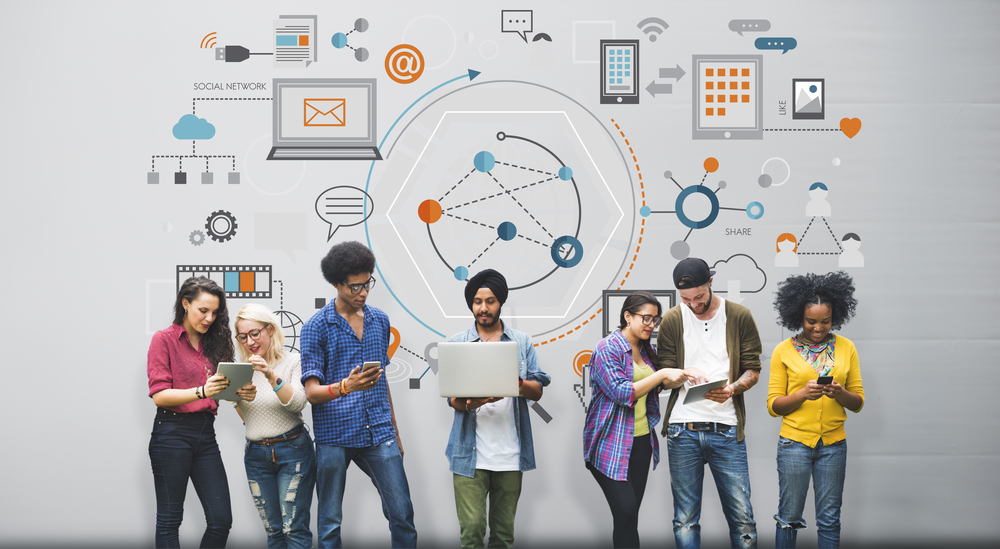

Bivek Pokhrel, 16th April

Technology has revolutionized our life and developed incredible services and products to place knowledge at our hand. It is a major factor for the survival of civilization in a world of frequent changes. The technical influence is greater than we can ever imagine since everyone is dependent on technology weather it’s a child or an adult. New innovations drives the market by chaos and people get used to them in no time, making their lives simpler, quicker and more enjoyable. Technology has been evolving regularly and it is a vital part of our lives because it helps in development of infrastructure, education and quality of life.
Technical impact can be seen on every aspect of my life such as health, education and communication. We can see technology changing throughout the time like when we were young our toy was limited but today’s kids are more like to have advanced playthings with them. Technology has progressed to the extent that it is feasible to support those children who have not yet begin to school. Likewise, due to the wide spread of COVID-19 we are having our online classes which is possible due to advanced technology. I can learn the course by staying at home, interact with my professor and submit my assignment via online. The different types of equipment used in labs has made my education more practical and numerous software that has been developed has improved my curriculum.
Communicating through mobile phones, internet, and televisions are possible due to development of new innovations. I often place my order for food, groceries and clothing through online so that I can save my time for other works. Technology has made communication easier. I have been engaging in different seminars and meetings by staying at home. Earlier, people used to carry different books and notes to the college but today I carry one laptop which is enough as I can find books, notes, course materials and everything on internet. Technology helped me to discover, it has helped me to learn and to continue learning.
Moreover, medical technology where innovation plays a key role in managing various areas of health with medical instruments and appliances has made important contributions to improving people's health around the world. When my ligament tore up a year ago, I was admitted to the hospital and provided with advanced medical services such as x-ray’s, MRI and surgery which made my legs healthier again. Whenever, we get sick doctors and ambulance are available right after one call.
In conclusion, Technology has made my life way much easier despite their disadvantages. Innovation is important in our everyday lives in many ways that we cannot knowingly disregard, because nothing else has changed the way of life of society, and that is exactly why technology is and will still be so important today and forever.
Copyright ©2020 Bivek Pokhrel
Find me on: